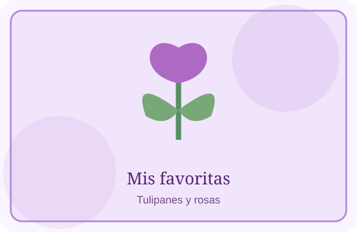
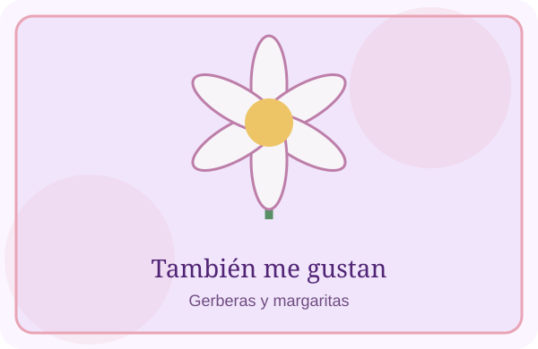

Me gustan las flores por sus colores y por lo bonitas que se ven. Mis favoritas son los tulipanes, las gerberas, las margaritas y las rosas.


Cada una tiene su propio estilo. Los tulipanes se ven delicados, las gerberas son muy coloridas y las margaritas y rosas siempre son bonitas.